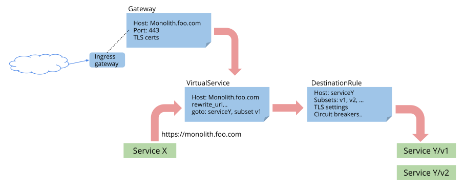

Meta info of this page
-
Plublished on June 4 2018
-
Updated on January 14 2024
-
4919 words
-
10 minutes
-
... views

到目前为止，Istio 提供了一个简单的 API 来进行流量管理，该 API 包括了四种资源：RouteRule，DestinationPolicy，EgressRule 和 Ingress（直接使用了 Kubernets 的 Ingress 资源）。借助此 API，用户可以轻松管理 Istio 服务网格中的流量。该 API 允许用户将请求路由到特定版本的服务，为弹性测试注入延迟和失败，添加超时和断路器等等，所有这些功能都不必更改应用程序本身的代码。
虽然目前 API 的功能已被证明是 Istio 非常引人注目的一部分，但用户的反馈也表明，这个 API 确实有一些缺点，尤其是在使用它来管理包含数千个服务的非常大的应用程序，以及使用 HTTP 以外的协议时。 此外，使用 Kubernetes Ingress 资源来配置外部流量的方式已被证明不能满足需求。
为了解决上述缺陷和其他的一些问题，Istio 引入了新的流量管理 API v1alpha3，新版本的 API 将完全取代之前的 API。 尽管 v1alpha3 和之前的模型在本质上是基本相同的，但它并不向后兼容的，基于旧 API 的模型需要进行手动转换。 Istio 接下来的几个版本中会提供一个新旧模型的转换工具。
为了证明该非兼容升级的必要性，v1alpha3 API 经历了漫长而艰苦的社区评估过程，以希望新的 API 能够大幅改进，并经得起时间考验。 在本文中，我们将介绍新的配置模型，并试图解释其后面的一些动机和设计原则。
设计原则
路由模型的重构过程中遵循了一些关键的设计原则：
- 除支持声明式（意图）配置外，也支持显式指定模型依赖的基础设施。例如，除了配置入口网关（的功能特性）之外，负责实现 入口网关功能的组件（Controller）也可以在模型指定。
- 编写模型时应该“生产者导向”和“以 Host 为中心”，而不是通过组合多个规则来编写模型。 例如，所有与特定 Host 关联的规则被配置在一起，而不是单独配置。
- 将路由与路由后行为清晰分开。
v1alpha3 中的配置资源
在一个典型的网格中，通常有一个或多个用于终结外部 TLS 链接，将流量引入网格的负载均衡器（我们称之为 gateway）。然后流量通过边车网关（sidecar gateway）流经内部服务。 应用程序使用外部服务的情况也很常见（例如访问 Google Maps API），一些情况下，这些外部服务可能被直接调用；但在某些部署中，网格中所有访问外部服务的流量可能被要求强制通过专用的出口网关（Egress gateway）。 下图描绘了网关在网格中的使用情况。

考虑到上述因素，v1alpha3引入了以下这些新的配置资源来控制进入网格，网格内部和离开网格的流量路由。
GatewayVirtualServiceDestinationRuleServiceEntry
VirtualService，DestinationRule和ServiceEntry分别替换了原 API 中的RouteRule，DestinationPolicy和EgressRule。 Gateway是一个独立于平台的抽象，用于对流入专用中间设备的流量进行建模。
下图描述了跨多个配置资源的控制流程。 
Gateway
Gateway 用于为 HTTP / TCP 流量配置负载均衡器，并不管该负载均衡器将在哪里运行。 网格中可以存在任意数量的 Gateway，并且多个不同的 Gateway 实现可以共存。 实际上，通过在配置中指定一组工作负载（Pod）标签，可以将 Gateway 配置绑定到特定的工作负载，从而允许用户通过编写简单的 Gateway Controller 来重用现成的网络设备。
对于入口流量管理，您可能会问： 为什么不直接使用 Kubernetes Ingress API ？ 原因是 Ingress API 无法表达 Istio 的路由需求。 Ingress 试图在不同的 HTTP 代理之间取一个公共的交集，因此只能支持最基本的 HTTP 路由，最终导致需要将代理的其他高级功能放入到注解（annotation）中，而注解的方式在多个代理之间是不兼容的，无法移植。
Istio Gateway 通过将 L4-L6 配置与 L7 配置分离的方式克服了Ingress的这些缺点。 Gateway只用于配置 L4-L6 功能（例如，对外公开的端口，TLS 配置），所有主流的 L7 代理均以统一的方式实现了这些功能。 然后，通过在Gateway上绑定VirtualService的方式，可以使用标准的 Istio 规则来控制进入Gateway的 HTTP 和 TCP 流量。
例如，下面这个简单的Gateway配置了一个 Load Balancer，以允许访问 host bookinfo.com 的 https 外部流量入 mesh 中：
apiVersion: networking.istio.io/v1alpha3
kind: Gateway
metadata:
name: bookinfo-gateway
spec:
servers:
- port:
number: 443
name: https
protocol: HTTPS
hosts:
- bookinfo.com
tls:
mode: SIMPLE
serverCertificate: /tmp/tls.crt
privateKey: /tmp/tls.key
要为进入上面的 Gateway 的流量配置相应的路由，必须为同一个 host 定义一个VirtualService（在下一节中描述），并使用配置中的gateways字段绑定到前面定义的Gateway 上：
apiVersion: networking.istio.io/v1alpha3
kind: VirtualService
metadata:
name: bookinfo
spec:
hosts:
- bookinfo.com
gateways:
- bookinfo-gateway # <---- bind to gateway
http:
- match:
- uri:
prefix: /reviews
route:
...
Gateway 可以用于建模边缘代理或纯粹的内部代理，如第一张图所示。 无论在哪个位置，所有网关都可以用相同的方式进行配置和控制。
VirtualService
用一种叫做“Virtual services”的东西代替路由规则可能看起来有点奇怪，但对于它配置的内容而言，这事实上是一个更好的名称，特别是在重新设计 API 以解决先前模型的可扩展性问题之后。
实际上，发生的变化是：在之前的模型中，需要用一组相互独立的配置规则来为特定的目的服务设置路由规则，并通过 precedence 字段来控制这些规则的顺序；在新的 API 中，则直接对（虚拟）服务进行配置，该虚拟服务的所有规则以一个有序列表的方式配置在对应的 VirtualService 资源中。
例如，之前在 Bookinfo 应用程序的 reviews 服务中有两个 RouteRule 资源，如下所示：
apiVersion: config.istio.io/v1alpha2
kind: RouteRule
metadata:
name: reviews-default
spec:
destination:
name: reviews
precedence: 1
route:
- labels:
version: v1
---
apiVersion: config.istio.io/v1alpha2
kind: RouteRule
metadata:
name: reviews-test-v2
spec:
destination:
name: reviews
precedence: 2
match:
request:
headers:
cookie:
regex: "^(.*?;)?(user=jason)(;.*)?$"
route:
- labels:
version: v2
在v1alph3，可以在单个VirtualService资源中提供相同的配置：
apiVersion: networking.istio.io/v1alpha3
kind: VirtualService
metadata:
name: reviews
spec:
hosts:
- reviews
http:
- match:
- headers:
cookie:
regex: "^(.*?;)?(user=jason)(;.*)?$"
route:
- destination:
host: reviews
subset: v2
- route:
- destination:
host: reviews
subset: v1
正如你所看到的， 和 reviews 服务相关的两个规则集中写在了一个地方。这个改变乍一看可能觉得并没有什么特别的优势， 然而，如果仔细观察这个新模型，会发现它和之前的 API 之间存在着根本的差异，这使得 v1alpha3 功能更加强大。
首先，请注意VirtualService的目标服务是使用hosts字段（实际上是重复字段）指定的，然后再在每个路由的destination字段中指定。 这是与以前模型的重要区别。
VirtualService描述了一个或多个用户可寻址目标到网格内实际工作负载之间的映射。在上面的示例中，这两个地址是相同的，但实际上用户可寻址目标可以是任何用于定位服务的，具有可选通配符前缀或 CIDR 前缀的 DNS 名称。
这对于应用从单体架构到微服务架构的迁移过程特别有用，单体应用被拆分为多个独立的微服务后，采用 VirtaulService 可以继续把多个微服务对外暴露为同一个目标地址，而不需要服务消费者进行修改以适应该变化。
例如，以下规则允许服务消费者访问 Bookinfo 应用程序的 reviews 和 ratings 服务，就好像它们是http://bookinfo.com/（虚拟）服务的一部分：
apiVersion: networking.istio.io/v1alpha3
kind: VirtualService
metadata:
name: bookinfo
spec:
hosts:
- bookinfo.com
http:
- match:
- uri:
prefix: /reviews
route:
- destination:
host: reviews
- match:
- uri:
prefix: /ratings
route:
- destination:
host: ratings
...
实际上在｀ VirtualService ｀中 hosts 部分设置只是虚拟的目的地,因此不一定是已在网格中注册的服务。这允许用户为在网格内没有可路由条目的虚拟主机的流量进行建模。 通过将VirtualService绑定到同一 Host 的Gateway配置（如前一节所述 ），可向网格外部暴露这些 Host。
除了这个重大的重构之外， VirtualService还包括其他一些重要的改变：
-
可以在
VirtualService配置中表示多个匹配条件，从而减少对冗余的规则设置。 -
每个服务版本都有一个名称（称为服务子集）。 属于某个子集的一组 Pod/VM 在
DestinationRule定义，具体定义参见下节。 -
通过使用带通配符前缀的 DNS 来指定
VirtualService的 host，可以创建单个规则以作用于所有匹配的服务。 例如，在 Kubernetes 中，在’VirtualService’中使用*.foo.svc.cluster.local 作为 host,可以对foo命名空间中的所有服务应用相同的重写规则。
DestinationRule
DestinationRule
配置将流量转发到服务时应用的策略集。 这些策略应由由服务提供者撰写，用于描述断路器，负载均衡设置，TLS 设置等。
除了下述改变外，DestinationRule与其前身DestinationPolicy大致相同。
-
DestinationRule
的
host可以包含通配符前缀，以允许单个规则应用于多个服务。 DestinationRule定义了目的 host 的子集subsets（例如：命名版本）。 这些 subset 用于｀ VirtualService ｀的路由规则设置中，可以将流量导向服务的某些特定版本。 通过这种方式为版本命名后，可以在不同的 virtual service 中明确地引用这些命名版本的 ubset，简化 Istio 代理发出的统计数据，并可以将 subsets 编码到 SNI 头中。 为 reviews 服务配置策略和 subsets 的DestinationRule可能如下所示：
apiVersion: networking.istio.io/v1alpha3
kind: DestinationRule
metadata:
name: reviews
spec:
host: reviews
trafficPolicy:
loadBalancer:
simple: RANDOM
subsets:
- name: v1
labels:
version: v1
- name: v2
labels:
version: v2
trafficPolicy:
loadBalancer:
simple: ROUND_ROBIN
- name: v3
labels:
version: v3
注意，与DestinationPolicy不同的是，可在单个DestinationRule中指定多个策略（例如上面实例中的缺省策略和 v2 版本特定的策略）。
ServiceEntry
ServiceEntry 用于将附加条目添加到 Istio 内部维护的服务注册表中。 它最常用于对访问网格外部依赖的流量进行建模，例如访问 Web 上的 API 或遗留基础设施中的服务。
所有以前使用EgressRule进行配置的内容都可以通过ServiceEntry轻松完成。 例如，可以使用类似这样的配置来允许从网格内部访问一个简单的外部服务：
apiVersion: networking.istio.io/v1alpha3
kind: ServiceEntry
metadata:
name: foo-ext
spec:
hosts:
- foo.com
ports:
- number: 80
name: http
protocol: HTTP
也就是说，ServiceEntry比它的前身具有更多的功能。首先，ServiceEntry不限于外部服务配置，它可以有两种类型：网格内部或网格外部。网格内部条目只是用于向网格显式添加服务，添加的服务与其他内部服务一样。采用网格内部条目，可以把原本未被网格管理的基础设施也纳入到网格中（例如，把虚机中的服务添加到基于 Kubernetes 的服务网格中）。网格外部条目则代表了网格外部的服务。对于这些外部服务来说，mTLS 身份验证是禁用的，并且策略是在客户端执行的，而不是在像内部服务请求一样在服务器端执行策略。
由于ServiceEntry配置只是将服务添加到网格内部的服务注册表中，因此它可以像注册表中的任何其他服务一样,与VirtualService和/或DestinationRule一起使用。例如，以下DestinationRule可用于启动外部服务的 mTLS 连接：
apiVersion: networking.istio.io/v1alpha3
kind: DestinationRule
metadata:
name: foo-ext
spec:
name: foo.com
trafficPolicy:
tls:
mode: MUTUAL
clientCertificate: /etc/certs/myclientcert.pem
privateKey: /etc/certs/client_private_key.pem
caCertificates: /etc/certs/rootcacerts.pem
除了扩展通用性以外，ServiceEntry还提供了其他一些有关EgressRule改进，其中包括：
- 一个
ServiceEntry可以配置多个服务端点，这在之前需要采用多个EgressRules来实现。 - 现在可以配置服务端点的解析模式（
NONE，STATIC或DNS）。 - 此外，我们正在努力解决另一个难题：目前需要通过纯文本端口访问安全的外部服务（例如
http://google.com:443）。该问题将会在未来几周内得到解决，届时将允许从应用程序直接访问https://google.com。请继续关注解决此限制的 Istio 补丁版本（0.8.x）。
创建和删除 v1alpha3 路由规则
由于一个特定目的地的所有路由规则现在都存储在单个VirtualService资源的一个有序列表中，因此为该目的地添加新的规则不需要再创建新的RouteRule，而是通过更新该目的地的VirtualService资源来实现。
旧的路由规则：
$ istioctl create -f my-second-rule-for-destination-abc.yaml
v1alpha3路由规则：
$ istioctl replace -f my-updated-rules-for-destination-abc.yaml
删除路由规则也使用 istioctl replace 完成，当然删除最后一个路由规则除外（删除最后一个路由规则需要删除VirtualService）。
在添加或删除引用服务版本的路由时，需要在该服务相应的DestinationRule更新 subsets 。 正如你可能猜到的，这也是使用istioctl replace完成的。
总结
Istio v1alpha3路由 API 具有比其前身更多的功能，但不幸的是新的 API 并不向后兼容，旧的模型升级需要一次手动转换。 Istio 0.9 以后将不再支持RouteRule，DesintationPolicy和EgressRule这些以前的配置资源 。Kubernetes 用户可以继续使用Ingress配置边缘负载均衡器来实现基本的路由。 但是，高级路由功能（例如，跨两个版本的流量分割）则需要使用Gateway ，这是一种功能更强大，Istio 推荐的Ingress替代品。
致谢
感谢以下人员为新版本的路由模型重构和实现工作做出的贡献（按字母顺序）
- Frank Budinsky (IBM)
- Zack Butcher (Google)
- Greg Hanson (IBM)
- Costin Manolache (Google)
- Martin Ostrowski (Google)
- Shriram Rajagopalan (VMware)
- Louis Ryan (Google)
- Isaiah Snell-Feikema (IBM)
- Kuat Yessenov (Google)